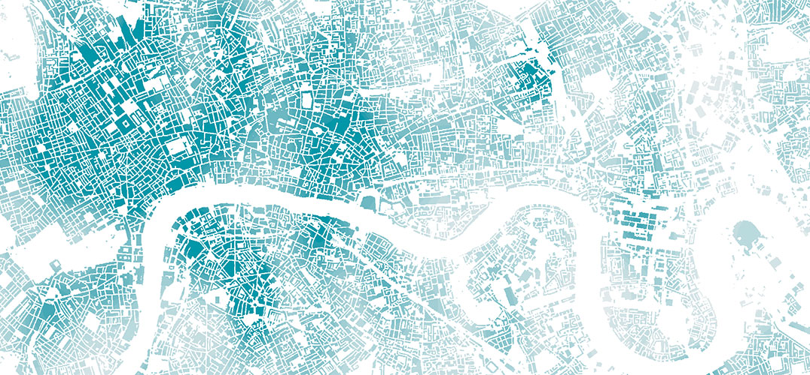

GEOG0125: Advanced Topics in Social Geographic Data Science
Welcome

Welcome to GEOG0125: Advanced Topics in Social Geographic Data Science, one of the core term two modules for this MSc programme (Social and Geographic Data Science). This module has been designed as an advanced topics module to learn data science concepts and methods, and to apply them in the domains of social science and geography. The module will introduce concepts such as Bayesian inference and Machine Learning methodologies.
Description
This particular facet in the advanced topics course aims to cover an Introduction to Bayesian Inference in RStudio using Stan, which is an interface to RStudio that allows state-of-the-art statistical modelling and Bayesian computation. We will introduce you to the absolute basics of writing your own probabilistic codes for carrying out a broad range of multivariable regression models within the Bayesian framework: Generalised Linear Modelling (GLMs); Hierarchical Models; and most notably for Spatial Risk Models; and Spatiotemporal Risk Models and Bayesian Updating for prediction in risk assessment and uncertainties with exceedance probabilities, which all have significant applications to many fields such as spatial epidemiology, social sciences, or disaster risk reduction and many more.
All lecture notes, recommended reading and seminar learning materials as well as supplementary video content will be hosted on this webpage.
You can download the lecture notes and data sets for the practical lesson from the table below.
| Week | Downloads | Topics |
|---|---|---|
| 1 | [Lecture Notes] | Introduction to Bayesian Inference |
| 2 | [Lecture Notes] [Datasets] | Bayesian Generalised Linear Models (GLMs) |
| 3 | [Lecture Notes] [Datasets] | Bayesian Hierarchical Models |
| 4 | [Lecture Notes] [Datasets] | Spatial Risk Models (Part I) |
| 5 | [Lecture Notes] [Datasets] | Spatiotemproal Risk Models & Bayesian Updating (Part II) |
Important note: The solutions will be made available by Wednesday emailed via Moodle.
Timetable and key locations
The Lectures are held every week in-person on Tuesday from 10:00am to 11:00am at the UCL GOSICH’s Wolfson Centre in Room A (Ground Floor) [MAP]. The computer practicals will be at the North West Wing Building in Room G07 [MAP] from 11:00am to 01:00pm on Friday.
IMPORTANT NOTE: Please bring your own laptops with you to the computer practicals on Friday.
Contact details
Dr. Anwar Musah
UCL Department of Geography
Room 115, North West Wing Building, WC1E 6BT
Email: a.musah@ucl.ac.uk